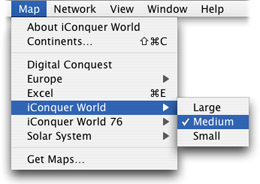
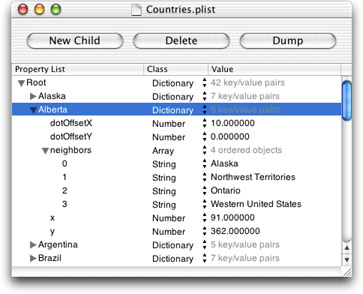
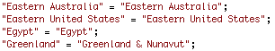
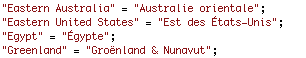
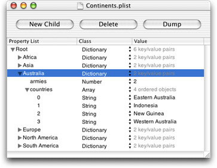
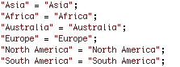
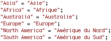
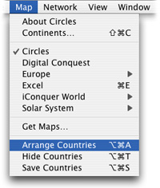

|
Most of the work of designing a map will take place in your image editor. These instructions will provide some general guidelines, but the creative part is up to you.
These instructions assume that you are using Adobe Photoshop to create maps. However, any graphics program that can create PNG images with transparency will work fine.
- Create or open your map in Photoshop.
- Select the part of the map where the countries will be, as opposed to the area where the background will show through. Choose Layer ▶ New ▶ Layer via Copy.
- Select each country one at a time, and then choose Layer ▶ New ▶ Layer via Cut.
- Save each country layer as a PNG file with the name of the country.
- Save the background as Background.png.
Be sure to save all graphics at 72 dpi (you can change the resolution in the Image Size window). When you have created graphics files for each country, add all the files to the Resources ▶ Countries folder in Xcode as shown in the example at right.
Creating map families
You may wish to make several different variations of the same map. For example, you could make different sizes, or different colors. You can switch back and forth between different variants in the middle of a game, and each player in a network game can use different variants of the same map. All variants in a family must have the same countries and continents.
You'll need to set a few more Info.plist Entries. All maps in the same family must have the same ICFamilyIdentifier, but a unique CFBundleIdentifier. They should also all have the same CFBundleName, but with the variant name in parentheses.
| CFBundleName |
CFBundleIdentifier |
ICFamilyIdentifier |
| My Map (Small) |
com.mydomain.mymap.small |
com.mydomain.mymap |
| My Map (Medium) |
com.mydomain.mymap.medium |
com.mydomain.mymap |
| My Map (Large) |
com.mydomain.mymap.large |
com.mydomain.mymap |
If iConquer loads several maps in the same family, it will display them in a submenu in the map menu:

You can also create a map that appears separately in the Map menu, yet behaves as if it were in the same family as another map. Just set your map's ICCompatibleIdentifier to match the other map's ICFamilyIdentifier.
For example, you can switch from the iConquer World map to the Excel map in the middle of a game, because the Excel map's ICCompatibleIdentifier is set to com.kavasoft.iConquer.maps.world.
Defining countries
Country names, positions, and connections are stored in the Countries.plist file. You'll need to edit this file with information for your map's countries.
You can use the Property List Editor program to edit plist files in an outline view. Or, if you are familiar with XML, you can use any text editor.
The property list contains a dictionary of countries, where each key is the country's name and the value is a dictionary of information about the country.

The plist defines where each country is on the map. Each country dictionary contains a pair of numbers (x and y) that specify the pixel coordinates of the lower-left corner of the country's image, as measured from the lower-left corner of the map. Use a reasonable guesstimate when initially inputting these numbers—you can use iConquer's map editor to accurately position countries.
The dot that shows the number of armies in the country normally appears in the center of the country. However, if the country has an asymmetrical shape, it may be preferable to display the dot slightly offset from the center.
The numbers (dotOffsetX and dotOffsetY) specify how many pixels the dot should be offset from the center of the country.
The plist also specifies which countries are connected. Each country dictionary contains a neighbors array that contains the names of the countries it is connected to. iConquer will write an error message to the Console if a string in the neighbors array does not match the name of a country. Connections must be two-way—an error will also be written for one-way connections. (To check for error messages, open the Console program in /Applications/Utilities.)
Naming countries
You should edit the file English.lproj/Countries.strings so that it contains the names of all your countries. (This file allows you to conveniently rename countries, as illustrated by Greenland in the example.)

If you would like to distribute your map in multiple languages, you can create localized variants of the Countries.strings file.

Defining continents
Information on continents is stored in the Continents.plist file. Each key in the file is the name of a continent, and each value is a dictionary of information about that continent. Note that continent names are not displayed in the program, so you don't need to worry about localizing them.

Each continent dictionary contains a countries array, which contains the names of the countries in the continent. These names must correspond to keys in the Countries.plist file, or an error will be written to the Console.
The armies number determines how many bonus armies players receive if they own every country in the continent.
Naming continents (2.3)
You should edit the file English.lproj/Continents.strings so that it contains the names of all your continents.

If you would like to distribute your map in multiple languages, you can create localized variants of the Continents.strings file.

Creating a thumbnail
The Plug-ins window will display a thumbnail for your map plug-in when the user clicks on it in the list. If the plug-in is not installed, the thumbnail will be read from your web server.
To create the thumbnail image, start a game of iConquer and pick countries so that the map borders are shown distinctly. Choose File ▶ Save Picture to save a screenshot as a PNG file.
Use your image editor to reduce the image's size to 360 x 225, with transparent pixels in the background. Save the file as a PNG, and add the file to your project. Lastly, change the ICThumbnail value in your project's Info.plist entries to the name of the file, without the extension.
Changing color transparency (2.1)
You can change the transparency of the color that iConquer uses to color your map. By default, countries are filled 40% with color, allowing 60% of each country's image to show through. You can override this value by setting the ICColorTransparency value in the Info.plist entries to a number bewtween 20 and 80. If the user specifies a custom value in the Preferences, it will override the value specified by the map.
Moving the player list (2.1)
By default, the list of players appears in the bottom left corner of the map. If it would be more convenient for your map, you can move the player list to a different corner. In the Info.plist entries, change the ICPlayerList value from BottomLeft to TopLeft, TopRight, or BottomRight.
Alternatively, if your map has no room for the player list you may hide it entirely by setting the ICPlayerList value to Hidden. To see which player is current, the user can show the Statistics window or add the current player toolbar item to the toolbar.
Creating army images (2.3)
You can replace the images that iConquer uses for armies in the armies drawer with your own. Create ten images, scale them to 50 x 50 pixels, save them as 1.png, 2.png, 5.png, 10.png, 20.png, 50.png, 100.png, 200.png, 500.png, and 1000.png, and add them to your project. It should be noted that this step is optional; if these images are not supplied iConquer will use the default images.
Creating card suit images (2.1)
You can replace the images that iConquer uses for card suits with your own. Create three images, scale them to 50 x 50 pixels, save them as SuitOne.png, SuitTwo.png, and SuitThree.png, and add them to your project. It should be noted that this step is optional; if these images are not supplied iConquer will use the default images.
Building your plug-in
When you are done preparing the files for your plugin, choose Build ▶ Build. Your complete will plug-in will be placed in the build directory in your project directory. You can then install and test your map plug-in.
Editing maps in iConquer
iConquer has a built-in map editor that can be used to fine-tune the positions of countries and their dots. To enable the map editor for a given map, edit the map's Info.plist Entries and set ICDebug to YES (make sure the type is Boolean and not String). When you load the plug-in, three new items will appear in the Map menu:

If you choose "Arrange Countries," you can drag countries around with the mouse. You can use the arrow keys to move countries one pixel at a time (or ten pixels at a time using the shift key). You can also drag the status dots around, or nudge them one pixel at a time using the arrow keys while holding down the option key.
Choose "Hide Countries" to display all countries with 10% opacity. If the background image contains all of the countries, repeatedly hitting ⌥⌘T (or just the spacebar) should make misaligned countries at you.
When all the countries are where you want them to be, choose "Save Countries." This will overwrite the Countries.plist file in the plug-in. You should then copy this file from the installed plug-in back to your project folder.
Be sure to set ICDebug to NO before you release your map.
|